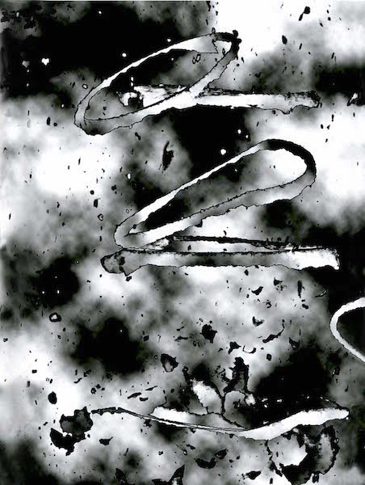

artist's statment
About Joanna
|
As an artist, I love the originality that unfolds as I combine various art forms to mirror my stream of consciousness. I work with paints, rice papers, chalk, silk cords, pastels and photography to allow abstract and representational elements to flow through my paintings. To represent that space hovering between the real and the unknown. |

|
Photography
|  |
Before mixing the media together which adds an excitement to the creation and completion of my works, I have to decide what belongs. In the most of the paintings that are here I have used photography, and digital photography as well. Sometimes I scan some photos that I have taken and other times I use my digital camera and prepare the images so they fit into the work. There is always painting under and over the photos. They never are exactly the way the camera's eye saw them. After I get the effect I want with the image than I pull out the many different rice papers and start the process of printing them onto the rice paper. Some of the images are so changed that I have to rethink what I am doing. Also this process allows me to do some transfers and that is always most interesting. My paintings are always hovering between that which is real and that which is on the edge. I am always going back and forth between the computer and the canvas; I guess I'm lucky It's not that far away from each process. When I started I was working in Hoboken and the computer was in Fairlawn, a bit of a stretch. |
Paintings
|
I find when the emotional and esthetic state of the mind is challenged painting is then truly successful. In my work I try to draw the viewer into my state of being and therefore confront the viewer with my truths. |

|
|
|
Joanna First, © 2015 Site created by Noah Finer |
Feedback on the site? Email noahfiner@gmail.com Click here to email. |
Gallery Photography Pastels Paintings |
About Artist's Statement Resume Contact Joanna |